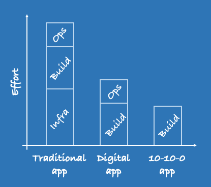

10.10.0 Apps
10100 apps are lower cost
Invest in build costs only. Infrastructure and operatations are automated

Traditional upgrade cycle
Apps written in traditional enterprise DotNet or Java frameworks are trapped in an upgrade cycle
Why do I need this?
- A business customer that wants to expore a product opportunity fast, and doesnt have months to produre a costly IT system
- Legacy systems were not built with evergreen in mind. Many of them need rewrites for the cloud.
- Many software platforms are out of date e.g. Microsoft .Net Framework, Java 9 & 10 will not be LTS, desktop apps, etc
How
- Atos will invest half of the MVP build to show how much can be done in 5 weeks
- The MVP is a fixed price if the client chooses to continue
- Low risk as clients will see the app being built daily. We will have a real-time 'model office' to test